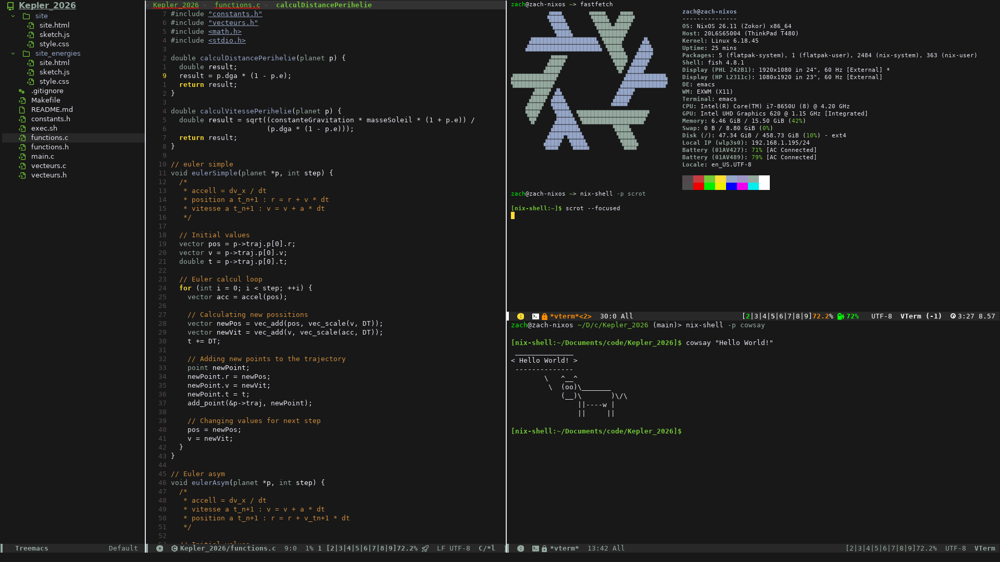

Current setup
Tools I use daily.
A minimal, reproducible setup focused on minimalizing mouse usage.

PC
- ThinkPad T480
OS
- NixOS
Keyboard
- Corne v4 (with ULANZI R094 Super Crab Clamp)
Camera
- UGREEN FineCam Lite 4K
Mouse
- Huge Telecom Trackball
Dock
- UGREEN Revodok Pro 210
Microphone
- FIFINE USB/XLR with arm mount